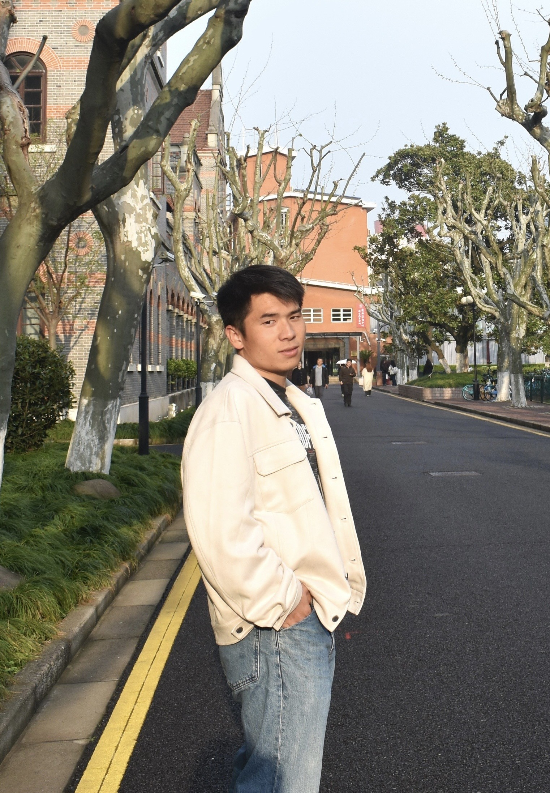

Toward Explainable Clinical Decision Support for Irregular and Incomplete ICU EHRs: An Observation-Aware Multi-Level Attention Model
Decision Support Systems, 210, 114756, 2026.

Ph.D. Candidate
Shanghai Jiao Tong University
Visiting Scholar
Purdue University
I am a Ph.D. candidate in Management Science and Engineering at the Antai College of Economics and Management, Shanghai Jiao Tong University, advised by Professor Na Geng. I expect to complete my Ph.D. in June 2027.
I am currently a visiting scholar at the Mitchell E. Daniels, Jr. School of Business, Purdue University, collaborating with Professors Qi Annabelle Feng and J. George Shanthikumar.
My research focuses on data-driven modeling and optimization, the intersection of deep learning and operations management, and interpretable healthcare analytics and decision support. Drawing on statistical decision theory, stochastic modeling, and data-integrated analytics, I study how to make operational decisions with limited, heterogeneous, and incomplete data. My current work includes optimality criteria for data-integrated decisions and graph neural network approaches to ensemble co-learning.
Decision Support Systems, 210, 114756, 2026.
Outside research, I enjoy playing tennis, swimming, and hiking.